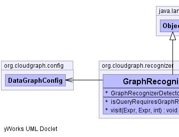
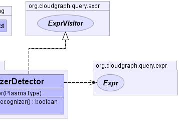

public class GraphRecognizerDetector extends java.lang.Object implements ExprVisitor
expression visitor which determines whether a
graph recognizer is required, within the context of a binary (query)
expression syntax tree, encapsulating operator precedence and
other factors.
Visits the expression tree and for each expression determines whether the
property and its path are represented within the row key model for the
current graph by a user defined
field. If not, then the property and its
expression are outside the row key and can't be represented by a
scan. Therefore a recognizer is required.
Expr,
RelationalBinaryExpr,
ExprVisitor,
DataGraphConfig,
UserDefinedRowKeyFieldConfig,
LogicalBinaryExpr,
RelationalBinaryExpr,
WildcardBinaryExpr|  |  |
| Constructor and Description |
|---|
GraphRecognizerDetector(PlasmaType rootType) |
| Modifier and Type | Method and Description |
|---|---|
boolean |
isQueryRequiresGraphRecognizer() |
void |
visit(Expr target,
Expr source,
int level)
The client event received when a new node is encountered.
|
public boolean isQueryRequiresGraphRecognizer()
public void visit(Expr target, Expr source, int level)
ExprVisitorvisit in interface ExprVisitortarget - the target nodesource - the target nodelevel - the traversal levelExprCloudGraph® is a registered trademark of TerraMeta Software, Inc. Copyright © 2014 - All Rights Reserved.